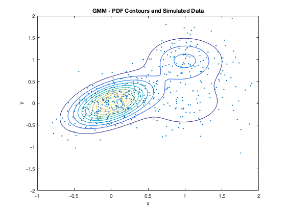

Question 5
% A Gaussian mixture model and use it to generate 500 samples from the mixture density defined % First distribution is centered at (0,0), second at (1,1) MU = [0 0;1 0;1 1] % This code is the covariance of the first identity matrix, second diagonal sigma = cat(3,[.1 .05;.05 .1],[.2 .01;.01 .2],[.1 0;0 .1]) % Equal the priors, mixing-weights p = [.6 .2 .2 ] % This code builds the Gaussian mixture model gm = gmdistribution(MU,sigma,p) gmPDF = @(x,y)pdf(gm,[x y]) % This below will plot the contour map 2D projection figure ezcontour(gmPDF,[-1 2],[-2 2]) hold on title('Gaussian Mixture Model & PDF Contours') % Generate 500 sample from Gaussian mixture models X = random(gm,500); scatter(X(:,1),X(:,2),10,'.') title('GMM - PDF Contours and Simulated Data') % The graph of the 2D projection displays a contour graph and shows a visal meaning of the Gaussian Mixture Model. The image also shows a component GMM with the pdf of the fitted GMM. I do think it is more helpful to write your own code in order to understand the relation between the priors, mean, and covariances. It shows in the workspace how everything is calculated.
MU =
0 0
1 0
1 1
sigma(:,:,1) =
0.1000 0.0500
0.0500 0.1000
sigma(:,:,2) =
0.2000 0.0100
0.0100 0.2000
sigma(:,:,3) =
0.1000 0
0 0.1000
p =
0.6000 0.2000 0.2000
gm =
Gaussian mixture distribution with 3 components in 2 dimensions
Component 1:
Mixing proportion: 0.600000
Mean: 0 0
Component 2:
Mixing proportion: 0.200000
Mean: 1 0
Component 3:
Mixing proportion: 0.200000
Mean: 1 1
gmPDF =
function_handle with value:
@(x,y)pdf(gm,[x,y])
